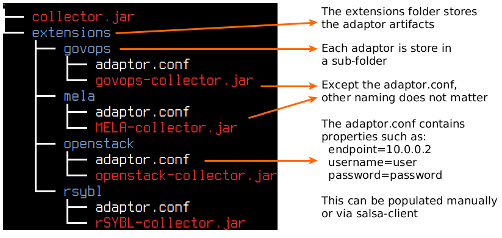

Managing On-demand Sensing Resources in IoT Cloud Systems
Maintained by tuwiendsg
This page provides extra materials for the paper "Managing On-demand Sensing Resources in IoT Cloud Systems".
At the moment, ELISE is integrated in SALSA, towards providing information of IoT Cloud Systems for the configuration processes. By the integration, ELISE reuses some of concepts and designs in SALSA, as well as automatically captures deployment information from SALSA by default, such as the cloud service structure and cloud infrastructure information.
A collector is the combination of a hosted component name conductor and a set of adaptors. The conductors and adaptors are .jar artifact, where conductor.jar is executable. The figure below shows how to inject adaptors to a conductor. When receiving a query, the conductor will scan all the extensions folder for the adaptors and execute appropriate functions. The custom settings for the adaptors can be put in the adaptor.conf.
The conductor can be execute via normal java: "java -jar conductor.jar"
Above folder structure can be created manually or using salsa-client. Salsa-client will inform salsa-pioneer to deploy the conductor as a normal software component on the infrastructure.
Sys-admin can use Salsa-client to manage the system. Available commands is shown via --help option:
./salsa-client --help
Usage: java -jar salsa-client.jar
SALSA Java command-line client
-a (--address) <address> : The address of the salsa engine (default:
128.130.172.216)
-h (--help) : Print the help and exit (default: true)
-p (--port) <port> : The port of the salsa engine (default: 8080)
Type 'java -jar salsa-client.jar help <command>' for help on a specific command.
Available commands:
conductor-list-collector: Get the list of available collector plugins.
conductor-push-collector: Add a collector plugin to conductor to collect information.
conductor-start : Start a conductor to collect the information
conductor-stop : Stop a conductor by ID or at salsa-engine
instance-deploy : Deploy one or more instances of a service unit.
instance-info-collect: Ask collector to start gathering the information. The process may take time.
instance-query : Get the information of an instance by ID.
instance-remove : Remove an running instance.
meta : Get metadata of the SALSA which is connected.
service-list : List the current managed cloud services
service-remove : Undeploy all components and remove the cloud services.
service-status : Get all the list of instances
service-submit : Submit a TOSCA to start a deployment.
subscribe-queue : Subscribe queue to get SALSA actions
syn : Send message the synchronize pioneers.
We provide in the repository the examples of the service description and result of queries. The service description can be found in Java domain-specific language or TOSCA file in XML format
String endpoint = "http://[IP:port/path, where elise-master is deployed]/rest/elise/";
// the 1st proxy to manage the queries
EliseCommunicationInterface manageProxy = JAXRSClientFactory.create(endpoint, EliseCommunicationInterface.class);
EliseQuery query = new EliseQuery(ServiceCategory.Gateway)
.hasRule("location", "building1", EliseQueryRule.OPERATION.EQUAL);
String queryID = manageProxy.querySetOfInstances(query);
manageProxy.getQueryProcessStatus(queryID); // block
// the 2nd proxy to manage the information
UnitInstanceInfoManagement localProxy = JAXRSClientFactory.create(endpoint, UnitInstanceInfoManagement.class, Collections.singletonList(new JacksonJsonProvider()));
Set instances = localProxy.queryUnitInstance(query);
for (UnitInstance instance : instances) {
Capability c = instance.getCapabilityByName("changeRate");
if (c != null) {
CapabilityManagement.execute(c, new String[]{"5"});
}
}
Please contact Le Duc Hung d.le [at] dsg.tuwien.ac.at and/or Hong-Linh Truong truong [at] dsg.tuwien.ac.at for any kind of issue.